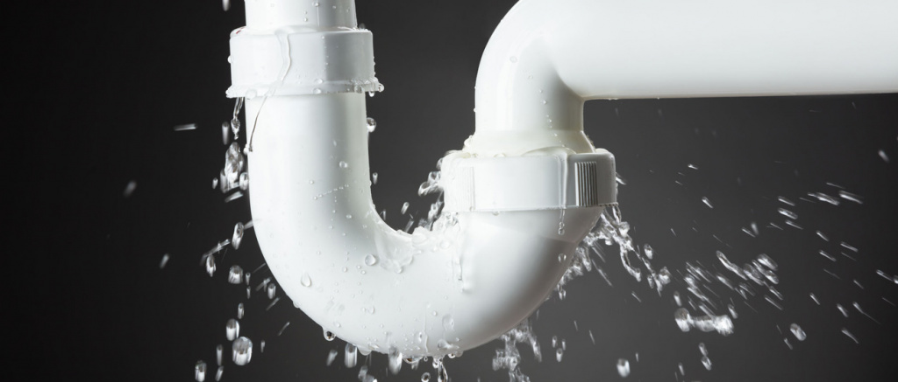

Причины неисправностей
- Паспортный срок службы закончился и колбы, шланги и фитинги износились. У всех производителей паспортная длительность эксплуатации разная.
- Низкое качество системы. Подобные проблемы характерны для “ноу-нейм” систем китайского производства. Поэтому если вас приятно радует стоимость системы, стоит предварительно почитать отзывы о продукте.
- Производственный брак. К сожалению, этот фактор встречается у любого производителя. Неисправности возникают обычно сразу после приобретения фильтра и покрываются гарантией производителя.
- Проблемы связанные с эксплуатацией и сервисом.
Теперь попробуем детально разобраться с проблемами, которые чаще всего возникают. Почему течет фильтр для воды, портится вкус и бак медленно наполняется.
Низкий напор из крана

- Ограниченная подача воды.
- Низкое давление в трубопроводе.
- Несвоевременная замена картриджей предочистки или мембранного элемента.
- Низкое давление в накопительном баке.
Причнами нестабильной работы системы обратного осмоса могут быть:
Если вы недавно произвели установку или плановое обслуживание, проверьте не пережаты ли трубки и полностью ли открыт кран на баке.
Если давление у вас в трубопроводе ниже 3 атм., тогда оно будет недостаточным для полноценной работы фильтра. Бак будет наполняться очень медленно, а воды в канализацию будет выливаться много. Такую проблему можно решить установкой помпы.
После истечения срока эксплуатации или повышенного водопотребления, мембранный элемент забивается слизью, вследствие чего фильтр медленно набирает бак. Несвоевременная замена картриджей приведет к тому, что на мембрану будет попадать неочищенная вода и приведет к ее ускоренному забиванию. Если вы вовремя меняете мембрану и картриджи предочистки, но такое случается регулярно, мы рекомендуем производить замену комплекта 1-2-3 чаще.
В норме давление должно быть 0,4 - 0,6 атм (бар). Если давление в баке не соответствует требуемому, нужно подкачать его с использованием насоса. Эта услуга производится инженером сервисной службы.
Почему фильтр для воды подтекает?
Протечка фильтра воды может возникнуть по ряду причин. Перед тем как устранить течь в фильтре для воды нужно понимать почему она происходит.
- Неправильное подключение или обслуживание.
- Скачки давления в системе.
- Износ уплотнительной прокладки между колбой и оголовком.
- Механические повреждения.
- Некачественные комплектующие.
Такие неполадки обычно происходят непосредственно после манипуляций с системой собственноручно или после прихода мастера. Для устранения таких неисправностей вполне хватит внимательно обследовать фильтр, выявить течь и произвести уплотнение в найденной точке. Основными местами разгерметизации могут быть клипсы на шлангах, дренаж и места соединения колб с базой. Для устранения этой проблемы можно отключить фильтр, отсоединить и заново произвести соединение.
Большинство установок предусматривают допустимое рабочее давление до 6 атм (бар). Если для вашей системы водоснабжения характерны перепады давления, то стоит установить редуктор, чтобы обезопасить фильтр. После установки редуктора, нужно проверить все фитинги и соединения.
Такое происходит если установка отработала свой срок службы, для замены стоит приобрести прокладку или вызвать сервис-инженера, который установит ее.
Такое может произойти при транспортировке или при неправильном обслуживании или установке.
Такое часто бывает у ноу-нейм систем. Обычно такие неприятности может решить сервисная служба.
Чтобы узнать, почему лопнул фильтр для воды, нужно всегда проверять 2, 4 или 5 факторы. Обычно они и являются причиной аварии.
Высокий уровень шума
Если ваша система очень сильно шумит причиной этому может быть:
- Воздух в авторегуляторе — эта проблема решится сама через некоторое время.
- Повышенное давление на входе в систему. В данной ситуации рекомендуется установка обратного клапана на входе в квартиру или непосредственно перед системой.
- Низкий уровень давления в баке.
Что делать если обратный осмос "журчит"?
Принцип работы мембраны обратного осмоса (разделение воды на чистую и грязную) приводит к тому? что грязную воду надо куда-то девать. И девается она в канализацию. Дренажная трубка, по которой течет грязная вода, как правило подсоединяется с помощью специального хомута к колену "сифона" под мойкой на кухне.
Так вот важным моментом как раз является место, где установлен этот самый дренажных хомут и "воткнута" трубка. - если трубка "втыкается" в горизонтальную часть сифона, то все хорошо. Вы даже не услышите как работает фильтр. - а вот если, по тем или иным причинам, трубка воткнута в вертикальную часть... да еще достаточно высоко над коленом сифона, в котором постоянно стоит вода.... Вот в этом случае будет слышно и капание и журчание. Вода из трубки будет литься с высоты 10-15 см. в наполненную водой емкость (колено сифона) и противно журчать.
Почему вода постоянно течет в дренаж
- Загрязнены мембрана или картриджи префильтров.
- Низкое давление на входе в систему
- Неисправность авторегулятора.
- Неисправность обратного клапана мембраны.
- Низкое давление в баке.
- Забитый, неисправный или забитый ограничитель потока.
Загрязнения уменьшают пропускную способность фильтра или попросту забивают его, вследствие чего давление в трубопроводе не может продавить воду через мембрану. В такой ситуации все решит плановое обслуживание.
Это приводит к невозможности прохождения жидкости через мембранный элемент и большие объемы воды сливаются в канализацию. Бак при этом медленно набирает воду.
Чтобы проверить этот момент, нужно перекрыть кран на баке. Через 2- 5 минут авторегулятор должен перекрыть подачу воды на систему. Если этого не произошло нужно обратиться в сервисный центр для замены авторегулятора.
Если эта деталь сломана, то даже если бак наполнен, вода продолжает поступать на мембрану и минуя ее сливаться в канализацию.
Правильное давление в накопительном баке обратного осмоса составляет 0,3 – 0,5 бар.
Он должен быть вставлен в трубку черного цвета на выходе из мембранодержателя. Если деталь отсутствует, вероятно, что его вымыло в канализацию и нужно установить новый элемент. Также возможно он находится возле дренажного хомута. Тогда нужно промыть его и установить трубку в ограничитель потока ближе к мембранодержателю.
Вода не вытекает в дренаж
Это говорит о том, что система не работает совсем. Причиной этому могут быть забитый ограничитель потока, который нужно извлечь и промыть или неправильно установленный дренажный хомут. Во втором случае нужно проверить соответствие отверстия в трубе и установленного хомута.
Плохой вкус воды
Необычный запах или вкус воды обычно проявляется если отработан ресурс угольного постфильтра. В таком случае его можно просто заменить.
Второй причиной является загрязнение системы или бака. Обычно это происходит в случае некорректного обслуживания. Нужно произвести плановый сервис и дезинфекцию системы.
Мутность после очистки
Это обусловлено тем, что вода насыщена воздухом. Это не является неполадкой и проходит через одну или две недели после установки фильтра. Чтобы убедится, что это именно воздух — наберите воду в стакан и дайте постоять 5 - 10 минут.
Стоит отметить, что такое возможно в зимнее время, когда разница температуры воды и окружающей среды может сильно отличаться.
Если у вас произошли неприятности не связанные с перечисленным в списке, пишите о них в комментариях. И никогда не забывайте о том, что в Ecosoft вы можете купить не только качественные фильтры, а и получить высокий уровень сервиса.